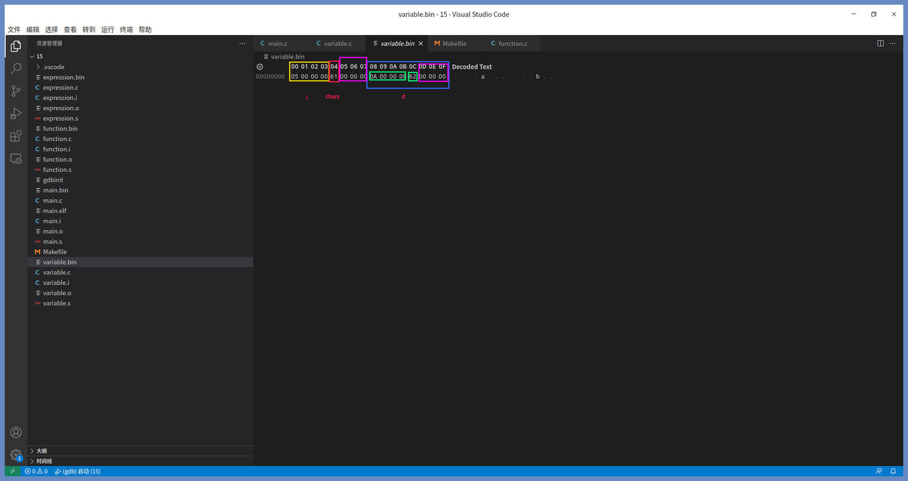
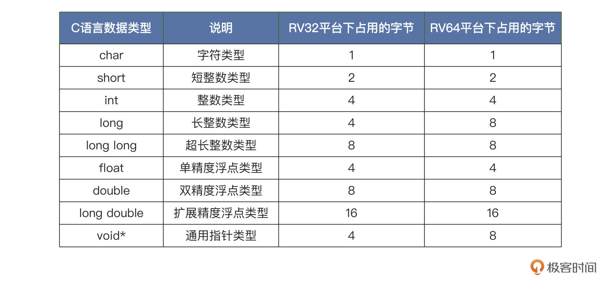
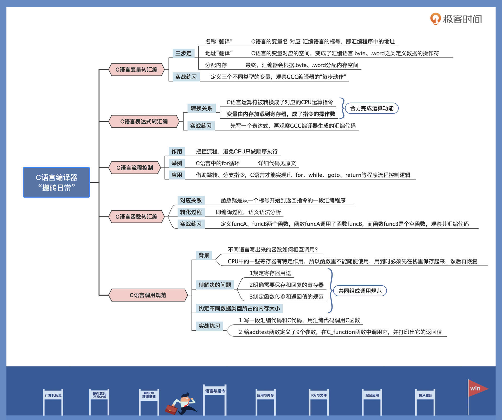

- 00 开篇词 练好基本功，优秀工程师成长第一步.md.html
- 01 CISC & RISC：从何而来，何至于此.md.html
- 02 RISC特性与发展：RISC-V凭什么成为“半导体行业的Linux”？.md.html
- 03 硬件语言筑基（一）：从硬件语言开启手写CPU之旅.md.html
- 04 硬件语言筑基（二）_ 代码是怎么生成具体电路的？.md.html
- 05 指令架构：RISC-V在CPU设计上到底有哪些优势？.md.html
- 06 手写CPU（一）：迷你CPU架构设计与取指令实现.md.html
- 07 手写CPU（二）：如何实现指令译码模块？.md.html
- 08 手写CPU（三）：如何实现指令执行模块？.md.html
- 09 手写CPU（四）：如何实现CPU流水线的访存阶段？.md.html
- 10 手写CPU（五）：CPU流水线的写回模块如何实现？.md.html
- 11 手写CPU（六）：如何让我们的CPU跑起来？.md.html
- 12 QEMU：支持RISC-V的QEMU如何构建？.md.html
- 13 小试牛刀：跑通RISC-V平台的Hello World程序.md.html
- 14 走进C语言：高级语言怎样抽象执行逻辑？.md.html
- 15 C与汇编：揭秘C语言编译器的“搬砖”日常.md.html
- 16 RISC-V指令精讲（一）：算术指令实现与调试.md.html
- 17 RISC-V指令精讲（二）：算术指令实现与调试.md.html
- 18 RISC-V指令精讲（三）：跳转指令实现与调试.md.html
- 19 RISC-V指令精讲（四）：跳转指令实现与调试.md.html
- 20 RISC-V指令精讲（五）：原子指令实现与调试.md.html
- 21 RISC-V指令精讲（六）：加载指令实现与调试.md.html
- 22 RISC-V指令精讲（七）：访存指令实现与调试.md.html
- 23 内存地址空间：程序中地址的三种产生方式.md.html
- 24 虚实结合：虚拟内存和物理内存.md.html
- 25 堆&栈：堆与栈的区别和应用.md.html
- 26 延迟分配：提高内存利用率的三种机制.md.html
- 27 应用内存管理：Linux的应用与内存管理.md.html
- 28 进程调度：应用为什么能并行执行？.md.html
- 29 应用间通信（一）：详解Linux进程IPC.md.html
- 30 应用间通信（二）：详解Linux进程IPC.md.html
- 31 外设通信：IO Cache与IO调度.md.html
- 32 IO管理：Linux如何管理多个外设？.md.html
- 33 lotop与lostat命令：聊聊命令背后的故事与工作原理.md.html
- 34 文件仓库：初识文件与文件系统.md.html
- 35 Linux文件系统（一）：Linux如何存放文件？.md.html
- 36 Linux文件系统（二）：Linux如何存放文件？.md.html
- 37 浏览器原理（一）：浏览器为什么要用多进程模型？.md.html
- 38 浏览器原理（二）：浏览器进程通信与网络渲染详解.md.html
- 39 源码解读：V8 执行 JS 代码的全过程.md.html
- 40 内功心法（一）：内核和后端通用的设计思想有哪些？.md.html
- 41 内功心法（二）：内核和后端通用的设计思想有哪些？.md.html
- 42 性能调优：性能调优工具eBPF和调优方法.md.html
- 先睹为快：迷你CPU项目效果演示.md.html
- 加餐01 云计算基础：自己动手搭建一款IAAS虚拟化平台.md.html
- 加餐02 学习攻略（一）：大数据&云计算，究竟怎么学？.md.html
- 加餐03 学习攻略（二）：大数据&云计算，究竟怎么学？.md.html
- 加餐04 谈谈容器云与和CaaS平台.md.html
- 加餐05 分布式微服务与智能SaaS.md.html
- 国庆策划01 知识挑战赛：检验一下学习成果吧！.md.html
- 国庆策划02 来自课代表的学习锦囊.md.html
- 国庆策划03 揭秘代码优化操作和栈保护机制.md.html
- 温故知新 思考题参考答案（一）.md.html
- 用户故事 我是怎样学习Verilog的？.md.html
- 结束语 心若有所向往，何惧道阻且长.md.html
- 捐赠
15 C与汇编：揭秘C语言编译器的“搬砖”日常
你好，我是LMOS。
通过上一节课的学习，我们已经清楚了C语言可以把程序抽象成一个函数，这样的函数又抽象成表达式和流程控制，表达式又能进一步抽象成各种类型的变量和各种运算符。并且我们还搞懂了变量就是数据，运算符就是操作，而变量的运算结合起来就能对数据施加操作。这样拆分下来，是不是C语言就没那么神秘了？
今天，让我们就来继续揭秘C语言编译器的日常工作，搞清楚各种类型变量、各种运算符、流程控制以及由它们组成的函数，是如何对应到机器指令的（代码从这里下载）。
此外，我还会带你了解函数间的调用规范，这能让我们在以后写代码时，清楚自己的每行代码都会被编译器转化为什么样的机器指令。
C变量
现在，我们从最基本的C语言的变量开始说起。
C语言是如何把各种类型的变量转换成对应的汇编语言呢？高级语言更容易被工程师理解，而汇编语言这样的低级语言，则更容易被机器解读。这是因为汇编语言里的大部分内容都跟机器语言一一对应，你可以这样理解，汇编语言就是把机器语言符号化。
我举个例子让你加深理解，机器对应的加法指令是一段很长的二进制数据，在汇编语言中，这个指令就对应着“add”这个指令。无论是机器指令还是寄存器，经过汇编语言“翻译”出来都是符号。
汇编器会将汇编源代码生成二进制程序文件。在程序二进制文件里有很多段。其中text段和data段在文件里占用位置空间，text段存放了程序指令的二进制数据，data段放着各种已经初始化的数据。二进制文件里还有个更特殊的bss段，它不占用文件的位置空间，而是在文件头里记录bss段的大小。
一旦text、data段加载到内存中运行，就会占用内存空间，自然也就对应到实际的内存。至于bss段，操作台会根据文件头里记录的大小给它分配内存空间，并初始为0。
有了这些基础，我们就可以写代码来进行验证了，如下所示：
//定义整型变量
int i = 5;
//定义字符变量
char chars = 'a';
//定义结构体
struct data
{
int a;
char c;
};
//定义结构体变量并初始化
struct data d = {10, 'b'};
我们在代码中定义了三个不同类型的变量。在GCC编译器后面加上-save-temps 选项，就能留下GCC编译器各个步骤生成的临时文件，方便我们查看GCC逐步处理的结果。
我已经为你写好了makefile文件，你用VSCode打开项目代码，按下F5就会生成相应的临时文件xxxx.i、xxxx.s、xxxx.bin。
其中，xxxx.i是gcc编译器生成的预处理文件，xxxx.s是gcc编译器生成的汇编文件，xxxx.o是gcc编译器生成的可链接的目标文件，xxxx.bin是去除了ELF文件格式数据的纯二进制文件，这是我用objcopy工具生成的，这个文件可以方便我们后续观察。
下面我们打开项目代码中的variable.s文件，如下所示：
.globl i #导出全局标号i
.section .sdata,"aw" #创建sdata段，属性动态分配可读写
.size i, 4 #占用4字节大小
i: #标号i
.word 5 #定义一个字，初始化为5
.globl chars #导出全局标号chars
.size chars, 1 #占用1字节大小
chars: #标号chars
.byte 97 #定义一个字节，初始化为97，正是‘a’字符的ascii码
.globl d #导出全局标号d
.size d, 8 #占用8字节大小
d: #标号d
.word 10 #定义一个字，初始化为10
.byte 98 #定义一个字节，初始化为98，正是‘b’字符的ascii码
.zero 3 #填充3个字节，数据为0
上面的汇编代码和注释已经写得很清楚了，C语言的变量名变成了汇编语言中的标号，根据每个变量的大小，用多个汇编代码中定义数据的操作符，比如.byte、.word，进行定义初始化。
C语言结构体中的字段则要用多个.byte、.word操作符的组合实现变量定义，汇编器会根据.byte、.word来分配变量的内存空间，标号就是对应的地址。这个变量的内存空间，当程序处于非运行状态时就反映在程序文件中；一旦程序加载到内存中运行，其中的变量就会加载到内存里，对应在相应的内存地址上。
上述代码仍然是可读的文本代码，下面我们看看汇编器生成的二进制文件variable.bin，如下所示。

从这张文件截图里，我们能清楚地看到，二进制文件variable.bin一共有16字节，第5到第7个字节和第13到第15个字节为填充字节，这是为了让地址可以按32位对齐。我们可以看到i变量占用4个字节空间，chars变量占用1个字节空间，d结构体变量占用8个字节，里面有两个成员变量a和c。
截图中反映的情况，相当于从0开始分配地址空间，当然后面链接器会重新分配地址空间的，这里i变量地址为0，chars变量地址为4，d变量地址为8。
现在我们总结一下，C语言转化成汇编语言时发生了什么样的变化：C语言的变量名成了汇编语言的标号，C语言的变量对应的空间变成了汇编语言.byte、.word之类的定义数据操作符。最终，汇编器会根据.byte、.word分配内存空间。这些对应关系，我们通过对二进制文件的分析已经再清楚不过了。
C语言表达式
下面，我们来看看C语言表达式，了解C语言是怎么把各种表达式转换成对应的汇编语言的。
我先说明一下，这里本来应该介绍运算符的，但是C语言的运算符不能独立存在，必须要与变量结合起来形成表达式，所以这里我把运算符归纳到表达式里一起给你讲解，你学起来也更清晰。
我们先来写一个表达式，如下所示：
int add()
{
//定义三个局部整形变量
int a, b, c;
//赋值表达式
a = 125;
b = 100;
//运算表达式
c = a + b;
//返回表达式
return c;
}
代码注释我为你标注了表达式的类型，至于代码的含义任何一个C语言初学者都能明白，就不过多讲解了。
接下来，我们直接看GCC编译器生成的汇编代码。GCC在编译代码时我加了“-O0”，这表示让GCC不做代码优化，如下所示：
add:
addi sp,sp,-32
sw s0,28(sp)
addi s0,sp,32
li a5,125
sw a5,-20(s0)
li a5,100
sw a5,-24(s0)
lw a4,-20(s0)
lw a5,-24(s0)
add a5,a4,a5
sw a5,-28(s0)
lw a5,-28(s0)
mv a0,a5
lw s0,28(sp)
addi sp,sp,32
jr ra
上述的汇编代码你看不懂也没关系，且听我分段给你拆解。它们分别是：在栈中分配变量的内存空间、给变量赋值、进行运算、处理返回值、回收栈中分配的空间、返回。
我们首先看看C语言中的“int a,b,c;”，这是三个局部变量。在C语言中局部变量是放在栈中的，栈在后面的课程里我再介绍。这里就是给a、b、c这三个变量在栈中分配变量的内存空间，对应的代码如下所示：
# int a,b,c;
addi sp,sp,-32 #把栈指针寄存器减去32，相当于在栈中分配了32字节的空间
sw s0,28(sp) #首先把s0寄存器存放在（sp+28）的内存空间中
addi s0,sp,32 #然后把s0寄存器设为原来sp寄存器的值
上述代码通过减去sp寄存器的值，在栈中分配了内存空间。因为栈是由高地址内存空间向低地址内存空间生长的，所以分配栈内存空间是减去一个值。
接着我们来看看C语言中的“a=125;b=100;”，这两行代码就是给变量赋值，也可以叫做赋值表达式，对应的汇编代码如下所示：
# a=125;b=100;
li a5,125 #125加载到a5寄存器中
sw a5,-20(s0) #把a5寄存器储存到（s0-20）的内存空间中，即栈中
li a5,100 #100加载到a5寄存器中
sw a5,-24(s0) #把a5寄存器储存到（s0-24）的内存空间中，即栈中
现在我们已经看到了“=”赋值运算，被转化为机器的数据传输指令，即储存、加载和寄存器之间的传输指令。从-20、-24这些地址偏移量，我们可以推导出a，b两个整型变量各占4字节大小的空间。
然后，我们来看看C语言里“c = a + b;”这一行代码，它就是运算表达式，同时也赋值表达式，但运算表达式的优先级更高，对应的汇编代码如下所示：
#c=a+b;
lw a4,-20(s0) #把（s0-20）内存空间中的内容加载到a4寄存器中
lw a5,-24(s0) #把（s0-24）内存空间中的内容加载到a5寄存器中
add a5,a4,a5 #a4寄存器加上a5寄存器的结果送给a5寄存器
sw a5,-28(s0) #把a5寄存器储存到（s0-28）的内存空间中，即栈中
上述代码中，我们再一次看到，C语言中的加法运算符被转化成了机器的加法指令，运算表达式中的变量放在寄存器中，就成了加法指令的操作数。但是运算结果也被放在寄存器中，而后又被储存到内存中了。
最后，我们来看看C语言中“return c;”这一行代码，也就是返回表达式。对应的汇编代码如下所示：
#return c;
lw a5,-28(s0) #把（s0-28）内存空间中的内容加载到a5寄存器中
mv a0,a5 #a5寄存器送给a0寄存器，作为返回值
lw s0,28(sp) #恢复s0寄存器
addi sp,sp,32 #把栈指针寄存器加上32，相当于在栈中回收了32字节的空间
jr ra #把ra寄存器送给pc寄存器实现返回
从上述代码块可以看到，先把c变量加载到a5寄存器中，又把a5寄存器送给了a0寄存器。
在语言调用标准中，a0寄存器是作为返回值寄存器使用的，return语句是流程控制语句，它被转换为机器对应的跳转指令，即jr指令。jr指令会把操作数送给pc寄存器，这样就能实现程序的跳转。
到这里，C语言表达式是怎么变成汇编语言的，我们就弄明白了。
C语言流程控制
如果只存在表达式，代码只能从上到下顺序执行，很多算法都无法实现，毕竟顺序执行就是“一条道走到黑”，这显然还不够。如果我们要控制代码的执行顺序，就需要流程控制。
通过流程控制，C语言就能把程序的分支、循环结构转换成汇编语言。下面我们以C语言中最常用的for循环为例来理解流程控制。for循环这个例子很有代表性，因为它包括了循环和分支，代码如下所示。
void flowcontrol()
{
//定义了整型变量i
int i;
for(i = 0; i < 5; i++)
{
;//什么都不做
}
return;
}
可以看到上述代码中，for关键字后面的括号中有三个表达式。
开始第一步先执行的是第一个表达式：i = 0; 接着第二步，执行第二个表达式。如果表达式的运算结果为false，就跳出for循环；然后到了第三步，执行大括号“{}”中的语句，这里是空语句，什么都不做；最后的第四步执行第三个表达式：i++，再回到第二步开始下一次循环。
下面我们看看这四步对应的汇编程序，如下所示：
flowcontrol:
addi sp,sp,-32
sw s0,28(sp)
addi s0,sp,32 # int i 定义i变量
sw zero,-20(s0) # i = 0 第一步 第一个表达式
j .L2 # 无条件跳转到.L2标号处
.L3:
lw a5,-20(s0) # 加载i变量
addi a5,a5,1 # i++ 第四步 第三个表达式
sw a5,-20(s0) # 保存i变量
.L2:
lw a4,-20(s0) # 加载i变量
li a5,4 # 加载常量4
ble a4,a5,.L3 # i < 5 第二步 第二个表达式 如果i <= 4就跳转.L3标号，否则就执行后续指令，跳出循环
lw s0,28(sp) # 恢复s0寄存器
addi sp,sp,32 # 回收栈空间
jr ra # 返回
有了前面的基础，上面这段代码应该很容易理解。
你可能有点疑惑，为什么代码的注释中没有看到第三步的内容？这是因为我们写了空语句，编译器没有生成相应的指令。一般CPU会提供多种形式的跳转指令，来实现程序的流程控制，后面课程里我们在专门研究和调试跳转指令，这里你先有个印象就行。
你不妨试着想象一下，图灵机那个读头在纸带上来回移动的情景。上面的代码中j，jr都是无条件的跳转指令，ble是带比较的条件分支指令，比较的结果为真，则跳转到相应的地址上继续执行；否则就会执行后面的下一条指令。
现在已经很清楚了，C语言正是用了这些跳转、条件分支指令，才实现了如if、for、while、goto、return等程序流程控制逻辑。
C语言函数
我们再来看看C语言函数，了解一下C语言是怎么把函数转换成汇编语言的。
通过前一节课的学习，我们知道了函数是C语言中非常重要的组成部分。我们要用C语言完成一个实际的功能，就需要至少写一个函数，可见函数就是C语言中对一段功能代码的抽象。一个函数就是一个执行过程，有输入参数也有返回结果（根据需要可有可无），可以调用其它函数，也被其它函数调用。
让我们去写函数验证一下，如下所示：
//定义funcB
void funcB()
{
return;
}
//定义funcA
void funcA()
{
//调用funcB
funcB();
return;
}
上述代码中定义了funcA、funcB两个函数，函数funcA调用了函数funcB，而函数funcB是个空函数，什么也不做。
下面我们直接看它们的汇编代码，如下所示：
funcB:
addi sp,sp,-16
sw s0,12(sp) #储存s0寄存器到栈中
addi s0,sp,16
nop
lw s0,12(sp) #从栈中加载s0寄存器
addi sp,sp,16
jr ra #函数返回
funcA:
addi sp,sp,-16
sw ra,12(sp)
sw s0,8(sp) #储存ra，s0寄存器到栈中
addi s0,sp,16
call funcB #调用funcB函数
nop
lw ra,12(sp) #从栈中加载ra，s0寄存器
lw s0,8(sp)
addi sp,sp,16
jr ra #函数返回
从上面的汇编代码可以看出，函数就是从一个标号开始到返回指令的一段汇编程序，并且C语言中的函数名就是标号，对应到汇编程序中就是地址。
即使是什么也不做的空函数，C语言编译器也会把它翻译成相应的指令，分配栈空间，保存或者恢复相应的寄存器，回收栈空间，这相当于一个标准的代码模板。
其中的call其实完成了两个动作：一是把call下一条指令的地址保存到ra寄存器中；二是把后面标号地址赋值给pc寄存器，实现程序的跳转。由于被跳转的程序段最后会执行jr ra，即把ra寄存器赋值给pc寄存器，然后再跳转到call指令的下一条指令开始执行，这样就能实现函数的返回。
总结一下，C语言编译器把函数名转换成了标号，也就是汇编程序里的某个地址，并且把函数的功能翻译成各种指令。
这样我们写下一个函数，经过C语言编译器加工，就变成了CPU能够“听懂”的各种运算指令、流程控制指令。之后，CPU就能定位到相应的汇编代码段，在这些代码段之间跳来跳去，实现函数之间的调用。
C语言调用规范
现在我们来探讨另一个问题，就是一个函数调用另一个函数的情况，而且这两个函数不是同一种语言所写。
比如说，在汇编语言中调用C语言，或者反过来在C语言里调用汇编语言。这些情况要怎么办呢？这时候就需要有一种调用约定或者规范。
这个规范有什么用呢？前面的课程我们说过，CPU中的一些寄存器有特定作用的，自然不能在函数中随便使用。即使用到了也要先在栈里保存起来，然后再恢复。
这就引发了三个问题：一是需要规定好寄存器的用途；二是明确哪些寄存器需要保存和恢复；第三则是规定函数如何传递参数和返回值，比如用哪些寄存器传递参数和返回值。关于CPU寄存器的规定，你可以回顾一下[第二节课]。
首先我们看一下，C语言下的数据类型在RISC-V平台下所占据内存的大小，这也是调用规范的一部分，如下表：

下面我们结合实例来理解。我们先来写一段汇编代码和C代码，用汇编代码调用C函数，它们属于不同的文件，这些文件我已经在工程里给你准备好了。
首先，汇编代码如下：
.text //表明下列代码放在text段中
.globl main //导出main符号，链接器必须要找的到main符号
main:
addi sp,sp,-16
sw s0,12(sp) //保存s0寄存器
addi s0,sp,16
call C_function //调用C语言编写的C_function函数
li a0,0 //设置main函数的返回值为0
lw s0,12(sp) //恢复s0寄存器
addi sp,sp,16
jr ra //返回
上述代码放在了main_asm.S文件中，这些代码我都替你手动写好了，你需要从main开始，代码的作用你可以参考一下注释说明。
这段代码主要处理了栈空间，保存了s0寄存器，然后调用了C语言编写的C_function函数，该函数我放在了main_c.c文件中，如下所示：
#include "stdio.h"
void C_function()
{
printf("This is C_function!\n");
return;
}
我们用VSCode打开工程文件夹，按下“F5”键，就会出现后面图里显示的结果。-

我们看到代码运行了，打印出了This is C_function!，而且没有出现任何错误，这说明我们通过汇编代码调用C函数成功了。你可以想一想，这个过程还有什么疏漏么？
以上代码的功能很简单，很多寄存器没有用到，所以并没有保护和恢复相应的寄存器。在复杂的情况下，调用者函数应该保存和恢复临时寄存器：t0~t6（整数寄存器），ft0~ft11（浮点寄存器）。被调用者函数应该保存和恢复的寄存器：s0~s11（整数寄存器），fs0~fs11（浮点寄存器）。
现在只剩最后一个问题了，C语言函数有参数和返回值。如果没有相应规范，一个C语言函数就不知道如何给另一个C语言函数传递参数，或者接收它的返回值。
我们同样用代码来验证一下，如下所示：
int addtest(int a, int b, int c,int d, int e, int f, int g, int h, int i)
{
return a + b + c + d+ e + f + g + h + i;
}
void C_function()
{
int s = 0;
s = addtest(1,2,3,4,5,6,7,8,9);
printf("This is C_function! s = %d\n", s);
return;
}
这段代码很简单，为了验证参数的传递，我们给addtest函数定义了9个参数，在C_function函数中调用它，并打印出它的返回值。
我们直接看看它生成的汇编代码，如下所示：
addtest:
addi sp,sp,-48
sw s0,44(sp)
addi s0,sp,48 #让s0变成原sp的值
#依次将a0~a7，8个寄存器放入栈中
sw a0,-20(s0)
sw a1,-24(s0)
sw a2,-28(s0)
sw a3,-32(s0)
sw a4,-36(s0)
sw a5,-40(s0)
sw a6,-44(s0)
sw a7,-48(s0)
#从栈中加载8个整型数据相加
lw a4,-20(s0)
lw a5,-24(s0)
add a4,a4,a5
lw a5,-28(s0)
add a4,a4,a5
lw a5,-32(s0)
add a4,a4,a5
lw a5,-36(s0)
add a4,a4,a5
lw a5,-40(s0)
add a4,a4,a5
lw a5,-44(s0)
add a4,a4,a5
lw a5,-48(s0)
add a4,a4,a5
#从栈中加载第9个参数的数据，参考第4行代码
lw a5,0(s0)
add a5,a4,a5
#把累加的结果放入a0寄存器，作为返回值
mv a0,a5
lw s0,44(sp)
addi sp,sp,48 #恢复栈空间
jr ra #返回
C_function:
addi sp,sp,-48
sw ra,44(sp)
sw s0,40(sp)
addi s0,sp,48
sw zero,-20(s0)
li a5,9
sw a5,0(sp) #将9保存到栈顶空间中
li a7,8
li a6,7
li a5,6
li a4,5
li a3,4
li a2,3
li a1,2
li a0,1 #将1~8，加载到a0~a7，8个寄存器中，作为addtest函数的前8个参数
call addtest #调用addtest函数
sw a0,-20(s0) #addtest函数返回值保存到s变量中
lw a1,-20(s0) #将s变量作为printf函数的第二个参数
lui a5,%hi(.LC0)
addi a0,a5,%lo(.LC0)
call printf
nop
lw ra,44(sp)
lw s0,40(sp)
addi sp,sp,48 #恢复栈空间
jr ra #返回
根据上面的代码，我们来总结一下，C语言函数用a0~a7这个8个寄存器，传递了一个函数的前8个参数。注意如果是浮点类型的参数，则使用对应的浮点寄存器fa0~fa7，从第9个参数开始依次存放在栈中,而函数的返回值通常放在a0寄存器中。
到这里，C语言调用规范我们就搞清楚了。
重点回顾
这节课，我们一起研究了C语言编译器的“搬砖日常”，讨论了C语言跟汇编语言的对应关系。现在我们来回顾一下这节课的重点。
C语言变量经过编译器的加工，其变量名变成了汇编语言中的标号，也就是地址。变量空间由汇编语言中.byte、.word等操作符分配空间，有的空间存在于二进制文件中，有的空间需要OS加载程序之后再进行分配。
接着是C语言表达式，C语言表达式由C语言变量和C语言运算符组成，C语言运算符被转换成了对应的CPU运算指令。变量由内存加载到寄存器，变成了指令的操作数，一起完成了运算功能。
之后我们借助for循环这个例子，发现C语言函数会被编译器“翻译”成一段带有标号的汇编代码，里面包含了流程控制指令（比如跳转指令）和各种运算指令。这些指令能修改PC寄存器，使之能跳转到相应的地址上运行，实现流程控制。
最后我们讨论了C语言的调用规范。“没有规矩不成方圆”，调用规范解决了函数之间的调用约束，比如哪些寄存器由调用者根据需要保存和恢复，哪些寄存器由被调用者根据需要保存和恢复，函数之间如何传递参数，又如何接收函数的返回值等等的问题。
为了奖励你看到这里，我还准备了一张知识导图，供你复习回顾要点。

下节课起，我们将会开始汇编指令的深入学习，敬请期待。
思考题
请问C语言函数如何传递结构体类型的参数呢？
欢迎你在留言区跟我交流互动，积极参与思考有助于你更深入地学习。如果觉得这节课还不错，别忘了分享给身边的同事。
© 2019 - 2023 Liangliang Lee. Powered by gin and hexo-theme-book.